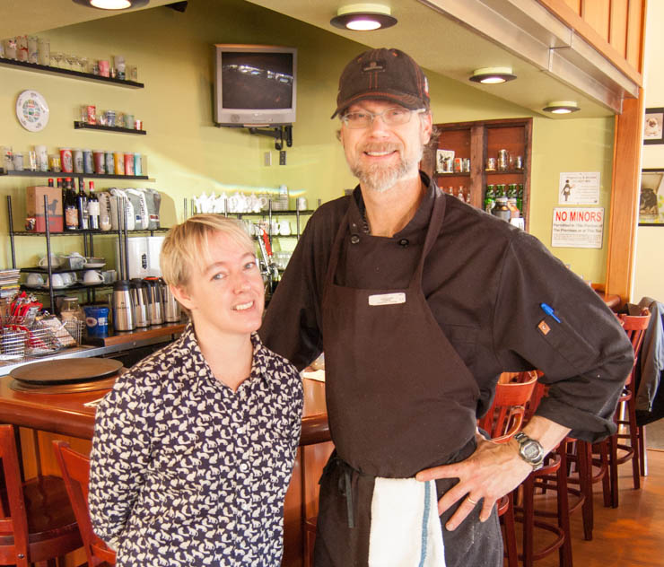

About

Chris Tate | Owner, Executive Chef
Who are some famous people who you have cooked for? Barack Obama, Faye Dunaway, Bill Cosby, Lyle Lovett, Emmylou Harris, Debbie Reynolds, Madonna, Sylvester Stallone, Michael Jordan, Scotty Pippen, Karl Malone, Patrick Ewing, Robert Redford, John Travolta, Kevin Costner, just to name a few…
Where are you the happiest? In the kitchen
Who are some of your heroes? Julia Child, Jacque Pepin, Ashton Eaton
What is your favorite thing to do outdoors in Bend? Alpine skiing , mountain biking, golf, golf, golf…
What is your favorite cookbook? Baking with Julia, anything by Marcella Hazan, Carol Field, or Alice Waters
Denise Tate | Owner, Chief Hen
What is your favorite movie? Harold and Maude, Singing in the Rain, Jean Cocteau’s Beauty and the Beast, Philadelphia Story… soooooo many!
Who inspires you? Jane Goodall, Little Edie Beale, Karl Lagerfeld
Who is your favorite Chef? Chris Tate (especially his Wild Mushroom Polenta)
Who is your favorite musician? Currently loving Rufus Wainwright and Andrew Bird, but I am often found grooving out to David Byrne and David Bowie!!!!
Wish for the world? No more homeless pets… Please adopt from a shelter or rescue. Ask me how!
“A quote? Why do you want a quote? Can we get back to you? We’re not famous yet.“ – Chris & Denise Tate